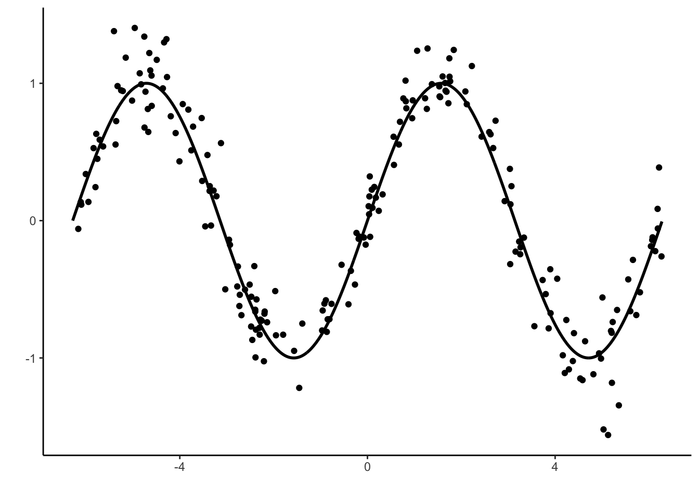

Chapitre 5 Agrégation : forêts aléatoires et gradient boosting
Les méthodes par arbres présentées précédemment sont des algorithmes qui possèdent tout un tas de qualités (facile à mettre en œuvre, interprétable…). Ce sont néanmoins rarement les algorithmes qui se révèlent les plus performants. Les méthodes d’agrégation d’arbres présentées dans cette partie sont souvent beaucoup plus pertinentes, notamment en terme de qualité de prédiction. Elles consistent à construire un très grand nombre d’arbres “simples” : \(g_1,\dots,g_B\) et à les agréger en faisant la moyenne : \[\frac{1}{B}\sum_{k=1}^Bg_k(x).\] Les forêts aléatoires (Breiman 2001) et le gradient boosting (Friedman 2001) utilisent ce procédé d’agrégation.
5.1 Forêts aléatoires
L’algorithme des forêts aléatoires consiste à construire des arbres sur des échantillons bootstrap et à les agréger. Il peut s’écrire de la façon suivante :
Entrées :
- \(x\in\mathbb R^d\) l’observation à prévoir, \(\mathcal D_n\) l’échantillon ;
- \(B\) nombre d’arbres ; \(n_{max}\) nombre max d’observations par nœud
- \(m\in\{1,\dots,d\}\) le nombre de variables candidates pour découper un nœud.
Algorithme : pour \(k=1,\dots,B\) :
- Tirer un échantillon bootstrap dans \(\mathcal D_n\)
- Construire un arbre CART sur cet échantillon bootstrap, chaque coupure est sélectionnée en minimisant la fonction de coût de CART sur un ensemble de \(m\) variables choisies au hasard parmi les \(d\). On note \(T(.,\theta_k,\mathcal D_n)\) l’arbre construit.
Sortie : l’estimateur \(T_B(x)=\frac{1}{B}\sum_{k=1}^BT(x,\theta_k,\mathcal D_n)\).
Cet algorithme peut être utilisé sur R avec la fonction randomForest du package randomForest. Nous la présentons à travers l’exemple du jeu de données spam du package kernlab.
Le problème est d’expliquer la variable binaire type par les autres.
A l’aide de la fonction randomForest du package randomForest, ajuster une forêt aléatoire pour répondre au problème posé.
Appliquer la fonction plot à l’objet construit avec randomForest et expliquer le graphe obtenu. A quoi peut servir ce graphe en pratique ?
Construire la forêt avec mtry=1 et comparer ses performances avec celle construite précédemment.
Utiliser la fonction train du package caret pour choisir le paramètre mtry dans la grille seq(1,30,by=5).
Construire la forêt avec le paramètre mtry sélectionné. Calculer l’importance des variables et représenter ces importance à l’aide d’un diagramme en barres.
La fonction ranger du package ranger permet également de calculer des forêts aléatoires. Comparer les temps de calcul de cette fonction avec randomForest
5.2 Gradient boosting
Les algorithmes de gradient boosting permettent de minimiser des pertes empiriques de la forme \[\frac{1}{n}\sum_{i=1}^n\ell(y_i,f(x_i)).\] où \(\ell:\mathbb R\times\mathbb R\to\mathbb R\) est une fonction de coût convexe en son second argument. Il existe plusieurs type d’algorithmes boosting. Un des plus connus et utilisés a été proposé par Friedman (2001), c’est la version que nous étudions dans cette partie.
Cette approche propose de chercher la meilleure combinaison linéaire d’arbres binaires, c’est-à-dire que l’on recherche \(g(x)=\sum_{m=1}^M\alpha_mh_m(x)\) qui minimise \[\mathcal R_n(g)=\frac{1}{n}\sum_{i=1}^n\ell(y_i,g(x_i)).\] Optimiser sur toutes les combinaisons d’arbres binaires se révélant souvent trop compliqué, Friedman (2001) utilise une descente de gradient pour construire la combinaison d’abres de façon récursive. L’algorithme est le suivant :
Entrées :
- \(d_n=(x_1,y_1),\dots,(x_n,y_n)\) l’échantillon, \(\lambda\) un paramètre de régularisation tel que \(0<\lambda\leq 1\).
- \(M\in\mathbb N\) le nombre d’itérations.
- paramètres de l’arbre (nombre de coupures…)
Itérations :
- Initialisation : \(g_0(.)=\mathop{\mathrm{argmin}}_c \frac{1}{n}\sum_{i=1}^n \ell(y_i,c)\)
- Pour \(m=1\) à \(M\) :
- Calculer l’opposé du gradient \(-\frac{\partial}{\partial g(x_i)}\ell(y_i,g(x_i))\) et l’évaluer aux points \(g_{m-1}(x_i)\) : \[U_i=-\frac{\partial}{\partial g(x_i)}\ell(y_i,g(x_i)) _{\Big |g(x_i)=g_{m-1}(x_i)},\quad i=1,\dots,n.\]
- Ajuster un arbre sur l’échantillon \((x_1,U_1),\dots,(x_n,U_n)\), on le note \(h_m\).
- Mise à jour : \(g_m(x)=g_{m-1}(x)+\lambda h_m(x)\).
Sur R On peut utiliser différents packages pour faire du gradient boosting. Nous utilisons ici le package gbm (Ridgeway 2006).
5.2.1 Un exemple simple en régression
On considère un jeu de données \((x_i,y_i),i=1,\dots,200\) issu d’un modèle de régression \[y_i=m(x_i)+\varepsilon_i\] où la vraie fonction de régression est la fonction sinus (mais on va faire comme si on ne le savait pas).
x <- seq(-2*pi,2*pi,by=0.01)
y <- sin(x)
set.seed(1234)
X <- runif(200,-2*pi,2*pi)
Y <- sin(X)+rnorm(200,sd=0.2)
df1 <- data.frame(X,Y)
df2 <- data.frame(X=x,Y=y)
p1 <- ggplot(df1)+aes(x=X,y=Y)+geom_point()+geom_line(data=df2,size=1)+xlab("")+ylab("")
p1
Rappeler ce que siginifie le \(L_2\)-boosting.
A l’aide de la fonction gbm du package gbm construire un algorithme de \(L_2\)-boosting. On utilisera 500000 itérations et gardera les autres valeurs par défaut de paramètres.
Visualiser l’estimateur à la première itération. On pourra faire un predict avec l’option
n.trees.Faire de même pour les itérations 1000 et 500000.
Sélectionner le nombre d’itérations par la procédure de votre choix.
5.2.2 Adaboost et logitboost pour la classification binaire.
On considère le jeu de données spam du package kernlab.
Exécuter la commande
Proposer une correction permettant de faire fonctionner l’algorithme.
Expliciter le modèle ajusté par la commande précédente.
Effectuer un summary du modèle ajusté. Expliquer la sortie.
Utiliser la fonction vip du package vip pour retrouver ce sorties.
Sélectionner le nombre d’itérations pour l’algorithme adaboost en faisant de la validation croisée 5 blocs.
Faire la même procédure en changeant la valeur du paramètre shrinkage. Interpréter.
Expliquer la différence entre adaboost et logitboost et précisez comment on peut mettre en œuvre ce dernier algorithme.
5.2.3 Exercices
Rappeler la fonction de risque adaboost.
Montrer que le risque est minimum en \[f^\star(x)=\frac{1}{2}\log\frac{\mathbf P(Y=1|X=x)}{\mathbf P(Y=-1|X=x)}.\]
Mêmes questions pour le risque logitboost.
Références
Breiman, L. 2001. “Random Forests.” Machine Learning 45: 5–32.
Friedman, J. H. 2001. “Greedy Function Approximation: A Gradient Boosting Machine.” Annals of Statistics 29: 1189–1232.
Ridgeway, G. 2006. “Generalized Boosted Models: A Guide to the Gbm Package.”